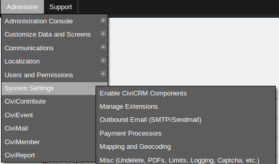
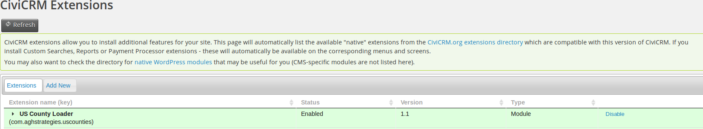
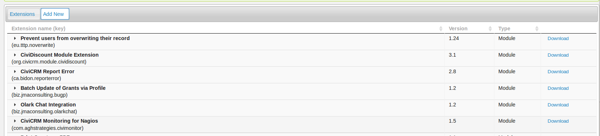
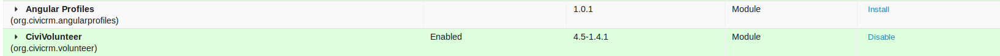

Make sure that CiviCRM Extensions are enabled correctly:
In the CiviCRM main dashboard menu:
Administer > System Settings > Manage Extensions


Sort by name (and/or scroll) until "CiviVolunteer" is found
Click Add New

Click Download (and Download/Install as necessary on following screens)
It will also be necessary to install the following dependencies manually (if this extension does not appear in the list):
For more information about manual installation of dependencies, please visit:
Manual Installation of Native Extensions
After the necessary files have been uploaded with the correct permissions set, the dependencies should be listed and ready for manual installaion:

Clicking Install (and Install as necessary on following screens) should complete the installation process.